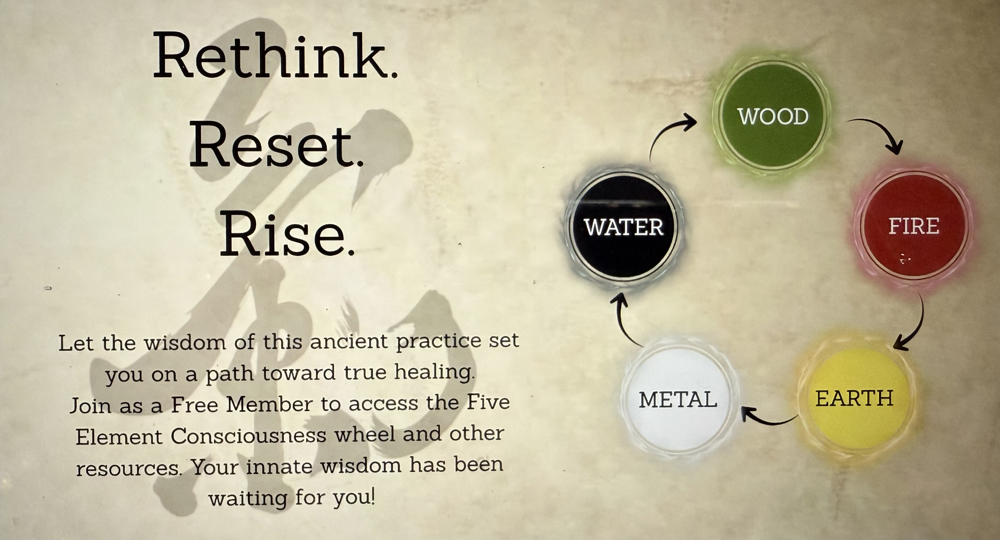

Week 2: Liver & Gallbladder
- Element: Wood 🌳 — growth, movement, flexibility
- Sense Organ: Eyes 👁️ — vision, clarity, inner sight
- Tissue: Tendons — strength and flexibility
- Emotion: Anger — signal for flow or stagnation
- Season: Spring 🌱 — rebirth, vibrant energy
- Color: Green 💚 — resonates with Liver energy
- Taste: Sour 🍋 — supports Liver function
“It’s all about the Liver. You want to be like the strong, agile deer, or like the cow which has huge muscles but little flexibility.”
— Grand Master Nan Lu
— Grand Master Nan Lu
Qigong Practice: Creating Flow
- Learn 2 new movements (total 6 daily)
- Practice the set at least once per day
- Weekly Challenge: Hold movement #10 for a few minutes or more
Signs of Liver/Gallbladder Imbalance
- Stress, angry moods, PMS, menopause, infertility
- Dry, brittle nails, cold hands/feet, burning/irritated eyes
- Migraine headaches, arthritic conditions, tendon issues
- Indigestion, bloating, high cholesterol
Lifestyle Tips
- Slow down, notice stress drains, cut back on stressors
- Become aware of foods and tastes your body asks for
- Support your Liver by wearing green, walking in Nature
- Try sour foods: lemon, pickled foods
Week 3: Kidney & Bladder
- Element: Water — powerful, unstoppable
- Sense Organ: Ear — protects from cold winds
- Tissue: Bone — supports bone and teeth health
- Emotion: Fear — signal for energetic support
- Season: Winter — rest, recharge, restore Qi
- Color: Black or dark blue — resonates with Kidney energy
- Taste: Salty — shellfish and bone soups support Kidney Qi
“Your life is a candle. How wisely you nurture your flame determines how well you live.”
— Grand Master Nan Lu
— Grand Master Nan Lu
Qigong Practice: Creating Flow
- Practice movements 1–7 and 10 daily, hold #10 for 8+ minutes
- Weekly Challenge: Add extra practice of movement #10 every day
- Movements: The Dragon’s Toe Dance, Kicks Forward, Twist, Punch, Looks at Tail, Taps Foot, Rocking Baby Dragon, Stands Between Heaven and Earth
Weekly Tracker
| Day | Practice Done? | Notes |
|---|---|---|
| Mon | ||
| Tue | ||
| Wed | ||
| Thu | ||
| Fri | ||
| Sat | ||
| Sun |
Signs of Kidney/Bladder Imbalance
- Hair loss, bone pain, fractures, forgetfulness, memory loss
- Knee/heel pain, chronic lower back pain, ringing in ears
- Fear, anxiety, panic attacks, dental problems, pain in feet
- Thyroid issues, frequent urination, prostate/sexual issues, insomnia
- Hot flashes, high blood pressure
Lifestyle Tips
- Identify daily activities that drain your energy. Reduce energy leaks.
- Eat seasonal, locally grown, warm foods
- Include: Bamboo shoots, Lemon, Bee pollen, Pickled ginger, Broccoli rabe, Plums, Dandelion greens, Scallions, Eggplant, Sour pickles, Fennel, Vinegar, Green apples, Mung beans
- 🌿 Eating warm foods aids digestion and conserves Qi
Week 4: Recap & Lifestyle
- Keep a Qigong log and prioritize quality practice
- Evaluate stress levels and take proactive steps
- Find time to relax, reconnect with Nature, and reawaken healing potential
- Mantra: “I honor my body’s wisdom and allow Qi to flow freely.”
- Reduce screen exposure to protect Liver energy
- Recognize yourself as an energetic being
- Relax and release stress — healthy releases help Liver Qi flow
- Exercise: Breaking Eggs — release tension outdoors
Self-Assessment
- Rate yourself 1–10 for: stress, anger, flexibility, letting go, awareness
- Tracking helps improve energy flow
RELATIONSHIPS
- The Liver and Gallbladder help to move Qi, bile, and fat through the body.
- The Gallbladder is also your master decision maker.
- This duo supports your emotional and physical flexibility.
Element: Wood 🌳
- The Wood element is related to the Liver. Its nature is to move freely, like the branches of a tree.
- Just as trees gracefully dance in the wind, allow your body to follow Nature's energy flow.
- Don’t just sit there—get up and move. Dance!
Sense Organ: Eyes 👁️
- Signs of Liver Qi imbalance: watery or itchy eyes (especially in Spring), blurry vision, floaters, changes in vision, red/dry/itchy eyes.
Tissue Organ: Tendons
- In TCM, strength comes from the tendons, not the muscles.
- Ultimate flexibility—both emotional and physical—is a sign of balanced Liver Qi.
Emotion: Anger
- The Liver loves to go with the flow. If it is not flowing, it communicates with you through excess anger and frustration.
Season: Spring 🌱
- Spring is the season of activity and rebirth. Nature reemerges with vibrant, active energy that must be free-flowing.
- If your body cannot match this energy, you may experience seasonal allergies.
Color: Green 💚
- The color green resonates with the Liver. All of Nature turns green in Spring.
- Support your Liver by wearing green, walking in Nature, and becoming more aware of your surroundings.
Taste: Sour 🍋
- Sour foods energetically support Liver function.
- Try squeezing lemon over cooked vegetables or eating pickled foods.
STARTING THE WEEK
- You’re about to begin Week 2. How are you feeling?
- Remember, symptoms are the body’s way of talking to you.
- If you are following the program consistently, you’re beginning to break down internal “garbage.”
- Circle any changes you’ve noticed since starting the program:
- More energized
- Bigger appetite
- Emotional balance
- More peaceful
- Fewer body aches
- Other
- Or:
- Less energized
- Smaller appetite
- Mood swings
- About the same
THE IMPORTANCE OF THE LIVER
- We live in fast-paced times. Many of us are constantly in motion.
- For the body to keep up, Liver energy must be strong and flow freely.
- The Liver plays a key role in managing daily stress.
- Healthy Liver function is so important that it is the focal point of the Dragon’s Way Qigong program.
- A hectic lifestyle, mental stress, and physical stress cause varying degrees of Liver dysfunction.
- When calm, the body’s vibration has an even tone. Stress and anger disrupt this balance, upsetting the flow of Liver Qi.
WHAT THE LIVER CAN DO
- Known as the “go with the flow” organ.
- The Liver and Gallbladder are responsible for the smooth flow of blood, Qi, and emotions.
- Their cooperative relationship with the Spleen and Stomach results in a healthy digestive system.
- Healthy Liver function is evident in emotional flexibility and healthy eyes.
- The Liver is the main organ responsible for women’s health.
- Smooth Liver Qi = normal menstrual cycles, reproductive health, and breast health.